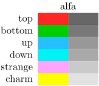
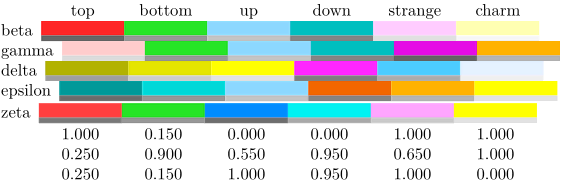

Contents
Summary
The command \showpalet is used to display color palettes
Settings
| \showpalet[...][...,...] | |
| [...] | name |
| [...,...] | horizontal vertical number value name |
| Option | Explanation |
|---|---|
| horizontal | horizontal display |
| vertical | vertical display |
| number | print color 'numbers' (actually, the quark name to which the color gets assigned (Hans happened to be reading S. Hawking's A hort history of time at the time of implementing color palettes).) |
| value | print rgb values |
| name | print palette name |
Description
Colors can be grouped in palettes. The colors in such a palette can have colorful names, but best is to use names that specify their use, like
important
or
danger
. ConTeXt has some palettes predefined and
\showpalet
is used to graphically display colors being used in a particular palette.
Examples
Example 1
\usecolors[dem] \showpalet [alfa] [vertical,name,number]
- 
Example 2
\usecolors[dem] \showpalet [beta] [horizontal,name,number] \showpalet [gamma] [horizontal,name] \showpalet [delta] [horizontal,name] \showpalet [epsilon] [horizontal,name] \showpalet [zeta] [horizontal,name,value]
- 